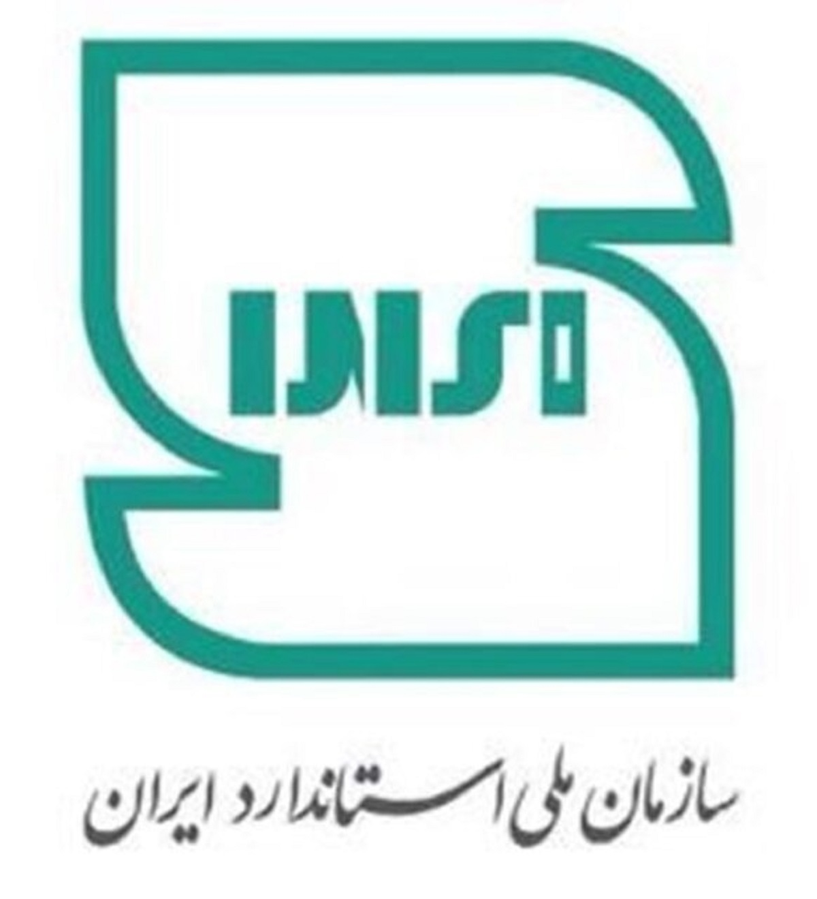
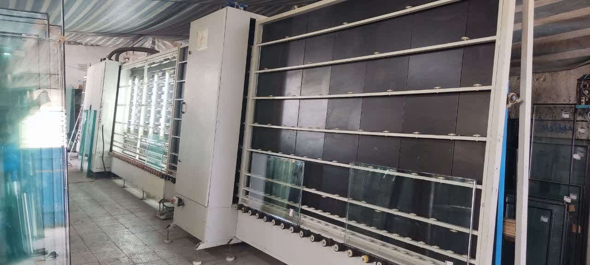

شرکت فاطر صنعت نقش جهان رسالت اصلی خود را صنعتی سازی در حوزه ساختمان قرارداده است
این شرکت فعالیت خود را از سال 1389 با تمرکز بر موارد ذیل آغاز نمود :
استفاده از بهترین مواد اولیه
فرایند مهندسی و صحیح تولید شیشه های چند جداره
تجهیز آزمایشگاه تست کیفت شیشه ها مطابق با استاندارد ملی 8522- ISNO
اخذ اولین نشان استاندارد ملی ایران در شهر اصفهان

